IA Agêntica: Progressão do Uso de Modelos de Linguagem
INTRODUÇÃO — IA AGÊNTICA COMO PROGRESSÃO DO USO DE MODELOS DE LINGUAGEM
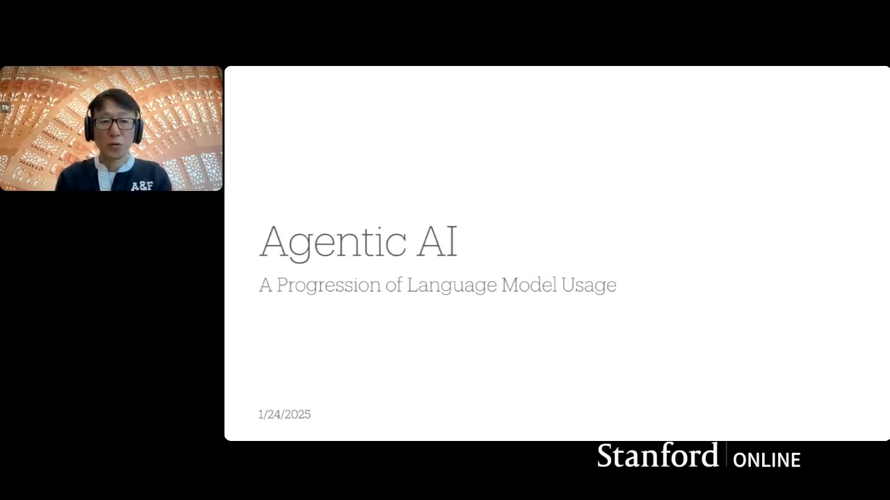
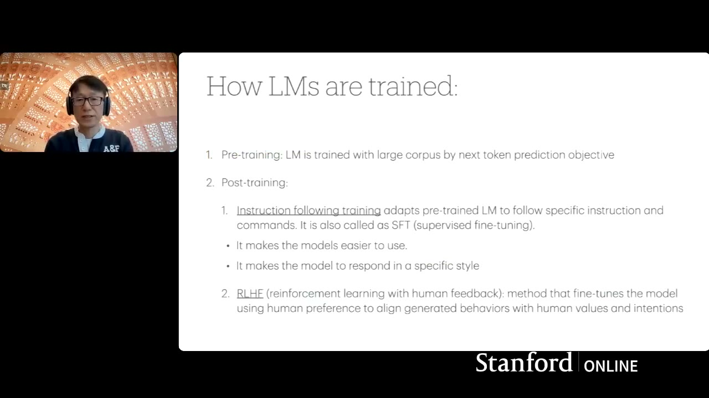
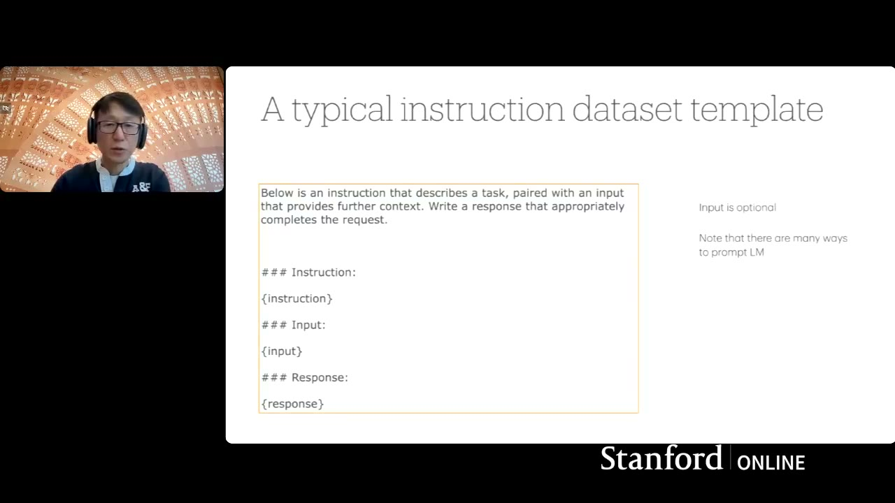
Meu nome é Inseo. Hoje vamos abordar IA agêntica como uma progressão do uso de modelos de linguagem. O roteiro da aula inclui: visão geral dos modelos de linguagem, como os utilizamos, limitações comuns, métodos que melhoram essas limitações, e a transição para modelos de linguagem agênticos e seus padrões de design.
O QUE SÃO MODELOS DE LINGUAGEM
Um modelo de linguagem é um modelo de machine learning que prevê a próxima palavra dado um texto de entrada. Se a entrada é “os estudantes abrem seus”, o modelo pode prever que a palavra mais provável é “livros” ou “laptops”. Se o modelo foi treinado com um grande corpus, ele gera a probabilidade da próxima palavra. Para continuar gerando, o output se torna o input do próximo passo, e o modelo continua gerando palavra por palavra.
COMO OS MODELOS SÃO TREINADOS
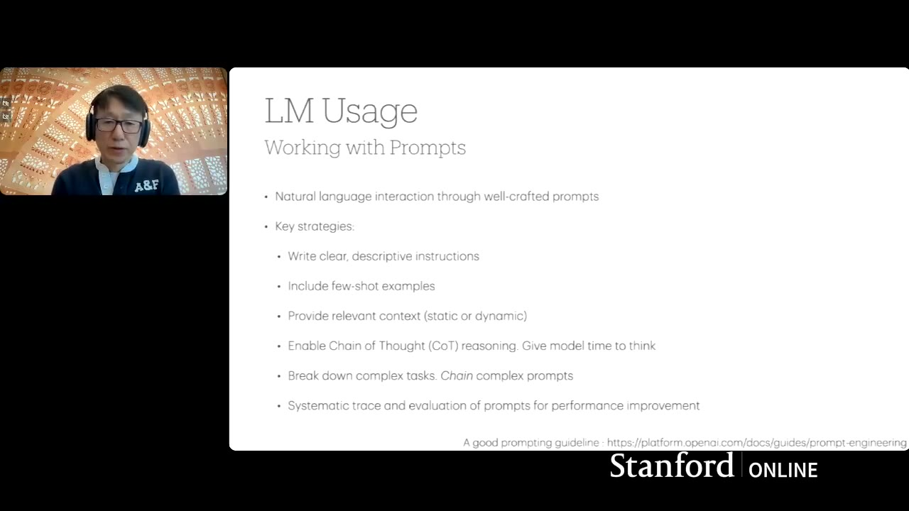
O treinamento tem duas partes. O pré-treinamento usa um grande corpus de textos coletados da internet, livros e fontes publicamente disponíveis, treinado com o objetivo de predição do próximo token. Depois do pré-treinamento, o modelo é bom em prever palavras, mas não é fácil de usar diretamente.
O pós-treinamento inclui instruction following training (SFT — supervised fine-tuning), que adapta o modelo para seguir instruções específicas, tornando-o mais fácil de usar e capaz de responder em estilos específicos. Depois vem o RLHF (reinforcement learning with human feedback), que alinha o modelo às preferências humanas usando esquemas de recompensa.
USANDO MODELOS DE LINGUAGEM VIA API
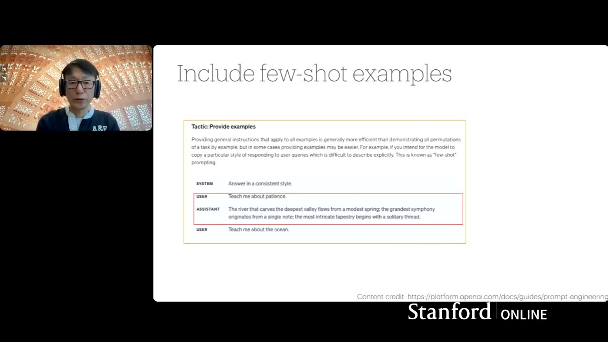
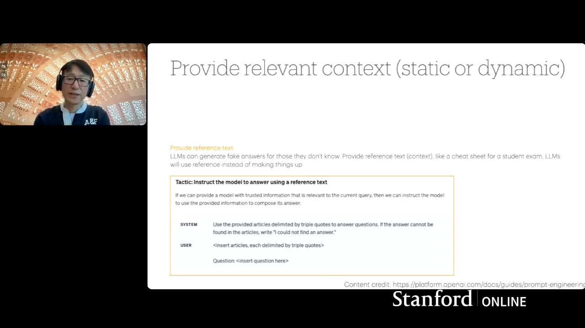
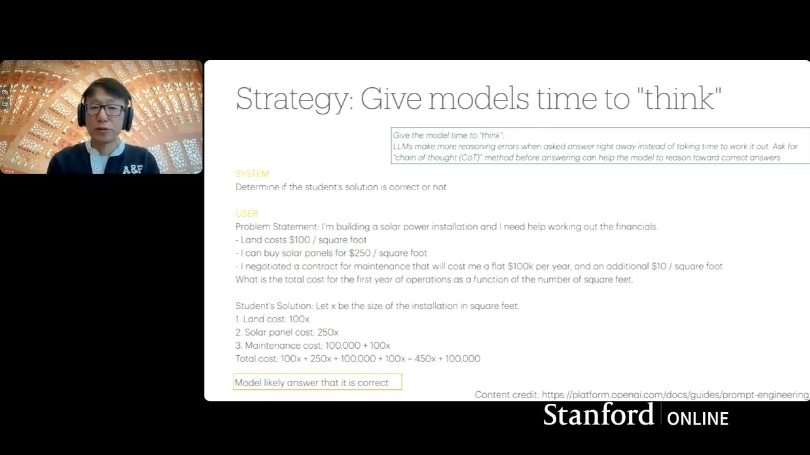
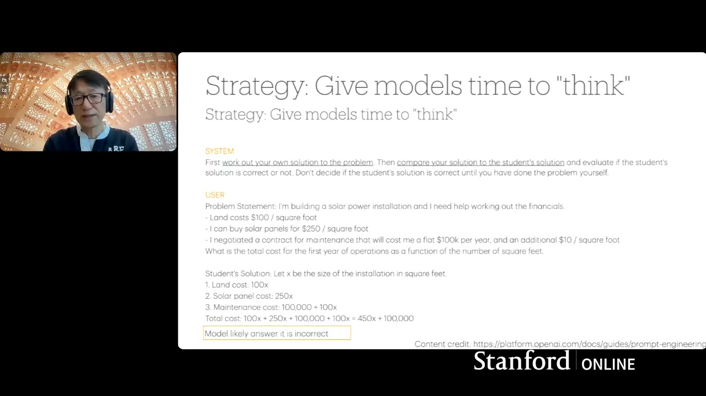
Os modelos são usados em diversas aplicações: assistentes de código, co-pilotos de domínio específico e interfaces conversacionais como ChatGPT. Para usar esses modelos, você pode fazer chamadas de API para provedores na nuvem ou hospedar modelos localmente — até em dispositivos móveis para modelos suficientemente pequenos.
O processo é: preparar texto de entrada como instrução, formatar na estrutura de API do provedor, enviar a chamada, o provedor gera o output na nuvem e responde. Seu software então processa o output e pode fazer chamadas subsequentes ao modelo.
BOAS PRÁTICAS DE PROMPTING
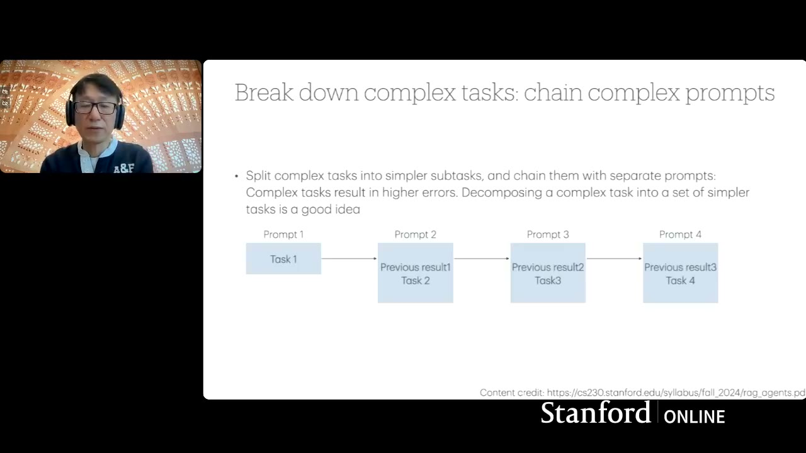
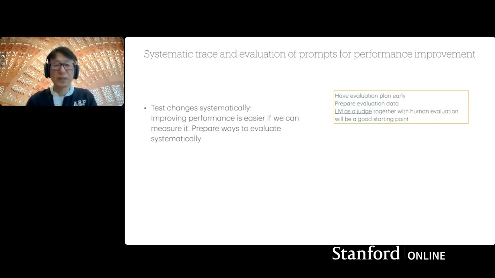
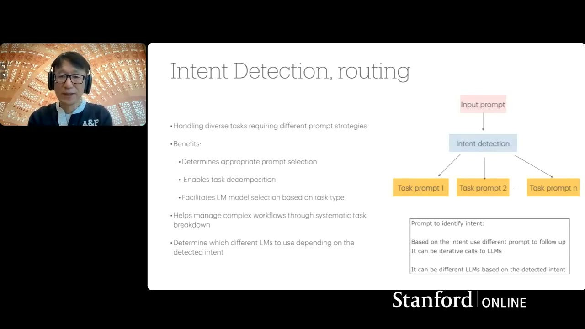
Como o input é texto livre, como você prepara seu prompt é crítico. Estratégias bem conhecidas incluem:
Escrever instruções claras e descritivas em detalhe — o modelo não lê sua mente. Incluir exemplos few-shot para demonstrar o formato de output desejado. Fornecer contexto e referências relevantes para reduzir alucinações. Habilitar raciocínio Chain of Thought (CoT) — dar tempo ao modelo para pensar. Quebrar tarefas complexas em etapas simples encadeadas. Manter rastreamento sistemático e logging para debugging e auditoria. E ter avaliação automatizada desde o início do desenvolvimento.
EXEMPLOS PRÁTICOS DE PROMPTING
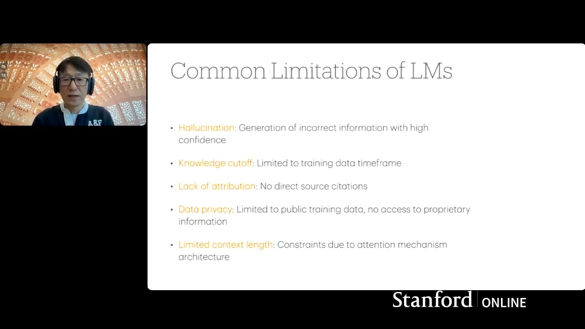
Instruções claras: em vez de uma solicitação curta, descreva em detalhe para que o modelo saiba exatamente o que gerar. Few-shot: forneça exemplos de input e output no estilo desejado, e depois faça sua pergunta real — o modelo seguirá o padrão.
Contexto e referências: use templates como “responda apenas com base no artigo fornecido” para RAG. Se o modelo não encontrar a resposta, instrua-o a dizer que não encontrou.
Chain of Thought: em vez de pedir a resposta direta, peça ao modelo para elaborar sua própria solução primeiro e depois comparar. Isso dá ao modelo a oportunidade de prestar atenção a todos os inputs e gerar respostas mais precisas.
Encadeamento de prompts: prepare prompts simples em estágios — gere o output do estágio 1, use como input do estágio 2, e assim por diante.
DETECÇÃO DE INTENÇÃO E ROTEAMENTO
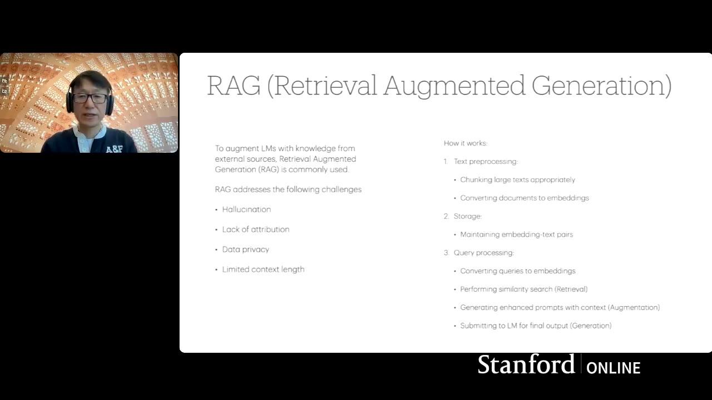
Em vez de processar o prompt de entrada como está, você pode detectar a intenção e direcionar para diferentes handlers de prompt. Isso é conhecido como prompt router. Com base no tipo de consulta, você pode usar um prompt mais simples com um modelo mais simples — isso ajuda tanto em custos operacionais quanto em gerar outputs mais apropriados.
LIMITAÇÕES COMUNS DOS MODELOS DE LINGUAGEM
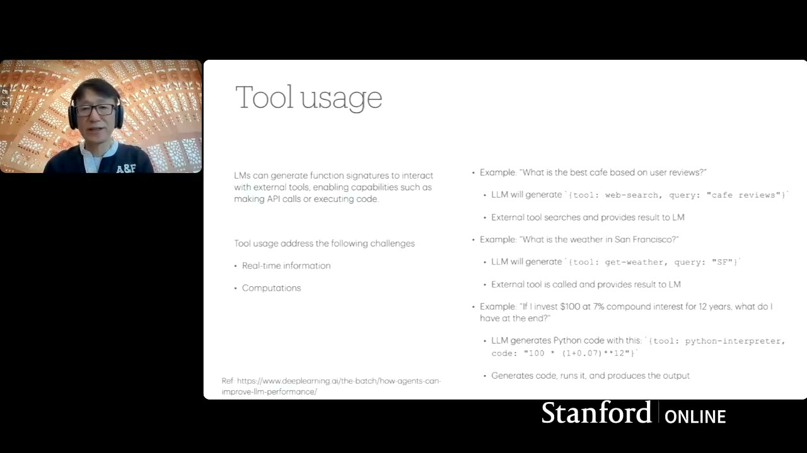
Alucinação: modelos às vezes geram informações incorretas com alta confiança. Corte de conhecimento: os dados de treinamento têm uma data de corte. Falta de atribuição: o modelo não diz de onde tirou a informação. Privacidade de dados: treinado com dados públicos, sem acesso a dados proprietários. Contexto limitado: embora esteja aumentando rapidamente, contextos mais longos trazem custos operacionais e latência.
RAG — GERAÇÃO AUMENTADA POR RECUPERAÇÃO
Para abordar essas limitações, RAG (Retrieval Augmented Generation) é uma das soluções. Reduz alucinações usando referências relevantes reais. Fornece citações porque sabe de onde a referência vem. Permite usar seus próprios dados proprietários. E faz bom uso de contextos limitados porque seleciona apenas dados relevantes.
O processo: indexe seus dados dividindo-os em chunks menores, converta para espaço de embedding usando um modelo de embedding e armazene em um banco de dados vetorial. Quando uma consulta chega, converta para embedding, faça busca por vizinhos mais próximos, selecione os top-K chunks relevantes e coloque como parte do prompt.
Métodos alternativos incluem busca web em tempo real e knowledge graphs (GraphRAG).
USO DE FERRAMENTAS E FUNCTION CALLING
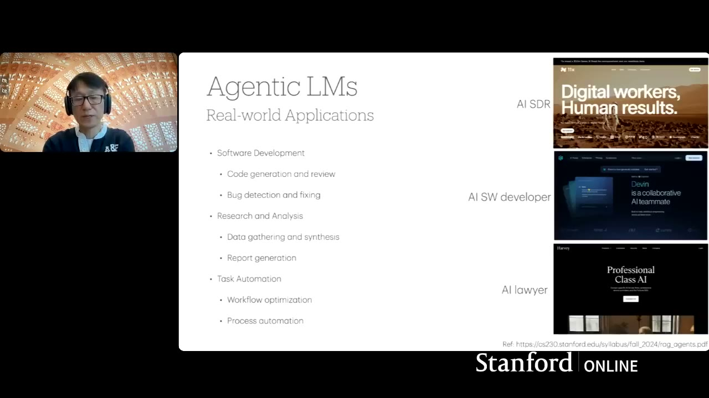
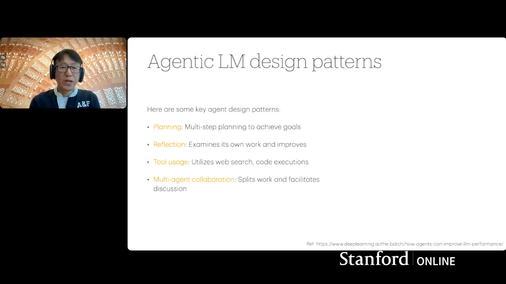
O modelo é text-in, text-out. Não executa ações nem extrai informações externas sozinho. Tool usage ou function calling resolve isso — permite obter informações em tempo real ou executar computações gerando código.
Exemplo: se alguém pergunta “qual é o clima em São Francisco?”, o modelo não sabe por si só. Mas se instruído previamente, gera um output no formato de chamada de API (get_weather com argumento “San Francisco”). O software recebe esse texto, faz a chamada real à API do clima, e retorna o resultado ao modelo para gerar uma resposta amigável.
O modelo também pode gerar código Python para ser executado em um sandbox separado.
O QUE É UM MODELO DE LINGUAGEM AGÊNTICO
Um modelo de linguagem agêntico pode interagir com o ambiente. Diferente do uso simples (text in → text out), o agêntico gera chamadas de ferramentas ou requisições de recuperação. O ambiente (qualquer coisa fora do modelo) fornece informações que alimentam o modelo como observações. Tudo é processado e armazenado em memória (histórico conversacional).
Outra definição: o modelo agêntico pode raciocinar e agir — o padrão ReAct (Reason and Action). O raciocínio usa métodos como Chain of Thought. As ações incluem recuperação, busca, calculadoras via API, geração de código Python. Combinando raciocínio e ação, o modelo faz tarefas muito mais complexas.
RACIOCÍNIO, PLANEJAMENTO E AÇÃO
A parte de raciocínio: em vez de fazer a tarefa diretamente, peça ao modelo para quebrar a tarefa e fazer um plano. Depois, baseado nessa decomposição, o modelo gera diferentes ações (chamadas de API, uso de ferramentas) para coletar informações do mundo externo. Tudo vai para memória, e finalmente o modelo gera a resposta.
Exemplo concreto: um agente de suporte ao cliente. O cliente pergunta “posso ter reembolso do produto X?” O sistema agêntico decompõe em quatro ações: verificar política de reembolso (via RAG contra política indexada), verificar informações do cliente, verificar informações do produto, e finalmente tomar a decisão baseada na política e informações coletadas.
WORKFLOWS AGÊNTICOS NA PRÁTICA
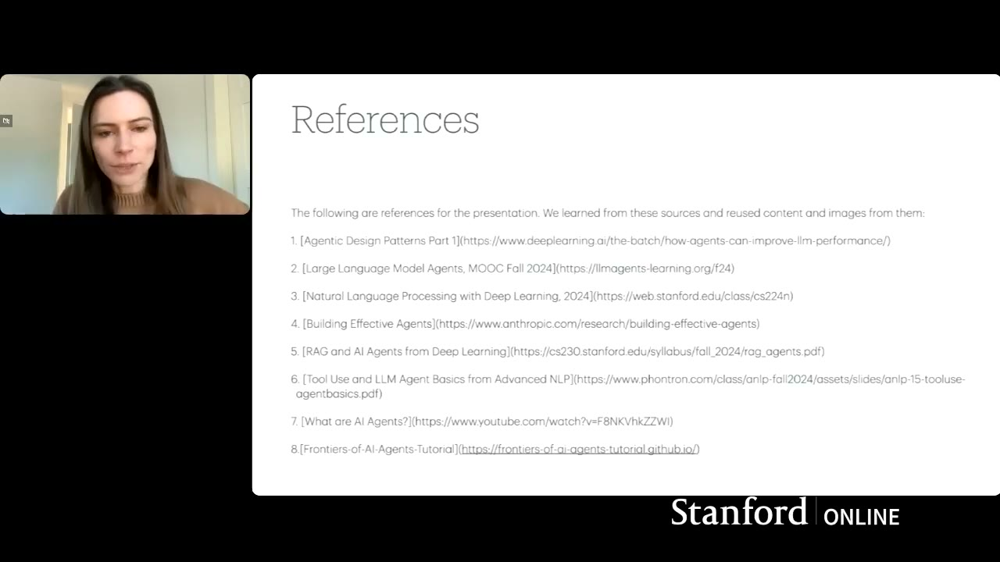
Aplicações reais incluem: desenvolvimento de software (geração de código, correção de bugs), pesquisa e análise (busca, síntese, relatórios) e automação de tarefas.
A diferença fundamental: com o mesmo modelo, se você fizer uma solicitação direta, o modelo pode não conseguir resolver. Mas se colocar a tarefa em formato agêntico, o modelo faz tarefas mais complexas usando modelos que sozinhos não conseguiriam. É por isso que o uso agêntico está expandindo os limites do que podemos fazer com IA.
PADRÕES DE DESIGN AGÊNTICOS
Quatro padrões principais:
Planejamento: pedir ao modelo para quebrar tarefas complexas em sub-tarefas mais simples e claras.
Reflexão: o modelo gera output, e na próxima chamada, o próprio modelo critica esse output. Exemplo: para refatorar código, primeiro peça feedback construtivo, depois use esse feedback para refatorar. A reflexão geralmente melhora o resultado.
Uso de ferramentas: qualquer coisa fora do modelo que precise de informações em tempo real. O modelo gera protótipos de API para fazer chamadas reais, ou gera código para execução em sandbox.
Colaboração multi-agente: dividir a tarefa e atribuir a diferentes agentes com personalidades e prompts dedicados. Exemplo: automação de casa inteligente com agente de controle climático, agente de iluminação, etc. Cada agente é um prompt com persona + software que lida com gatilhos externos. Um coordenador orquestra tudo.
RESUMO E RECOMENDAÇÕES
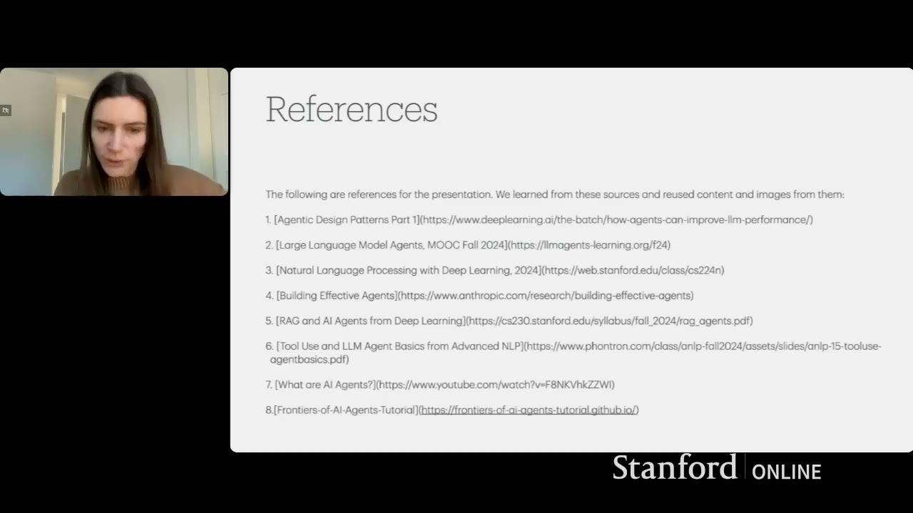
O uso agêntico de modelos de linguagem é uma progressão e extensão do uso simples. As boas práticas de uso simples continuam aplicáveis, mas agora temos métodos adicionais: recuperação, busca, uso de ferramentas, workflows com diferentes tipos de prompts.
O modelo serve como núcleo de raciocínio, enquanto ferramentas e recuperação permitem interagir com o mundo externo. Combinando tudo, alcançamos tarefas complexas que o uso simples de input-output não conseguiria.
Para avaliação de agentes: usar LLM-as-a-judge com padrão de reflexão (feedback de “engenheiro júnior” revisado por “engenheiro sênior”) melhora significativamente a qualidade da avaliação.
Para começar: use o playground do provedor de modelo para experimentar prompts rapidamente. Depois passe para chamadas de API. Então decida se quer usar frameworks existentes ou continuar com sua própria base de código. Comece simples, experimente e itere.